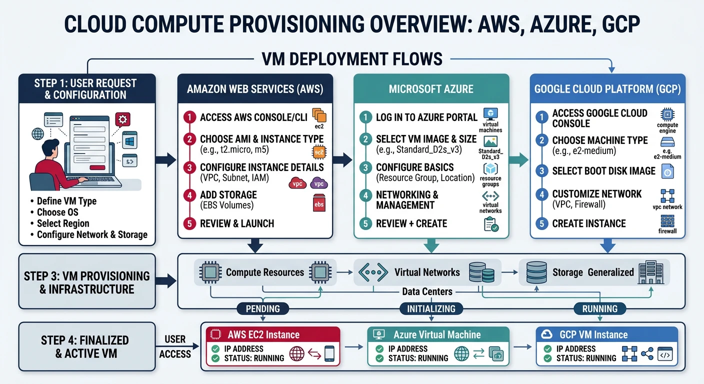
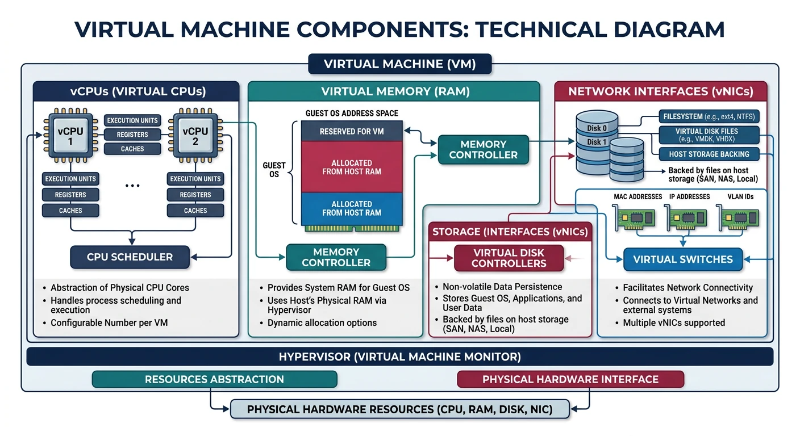
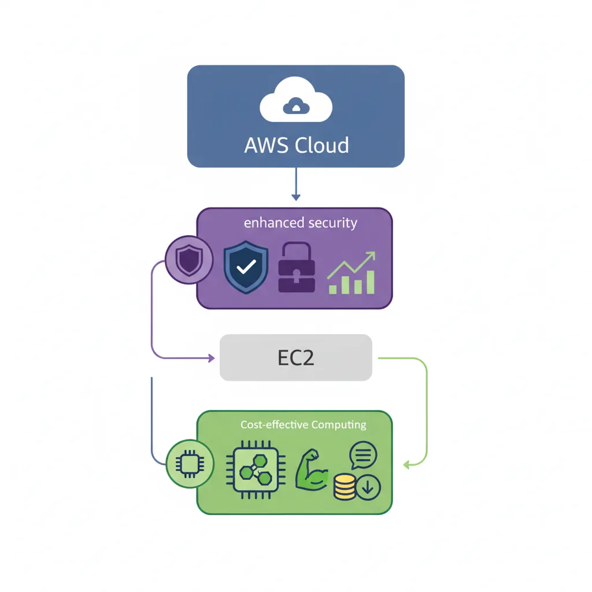
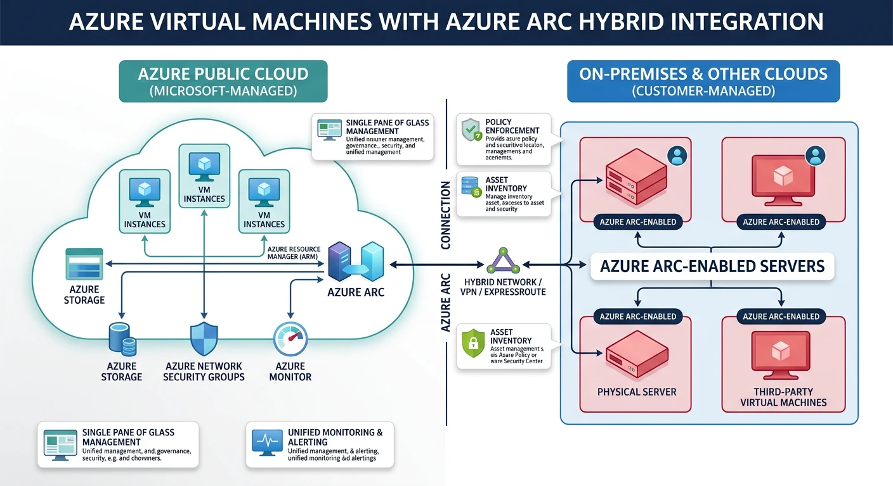
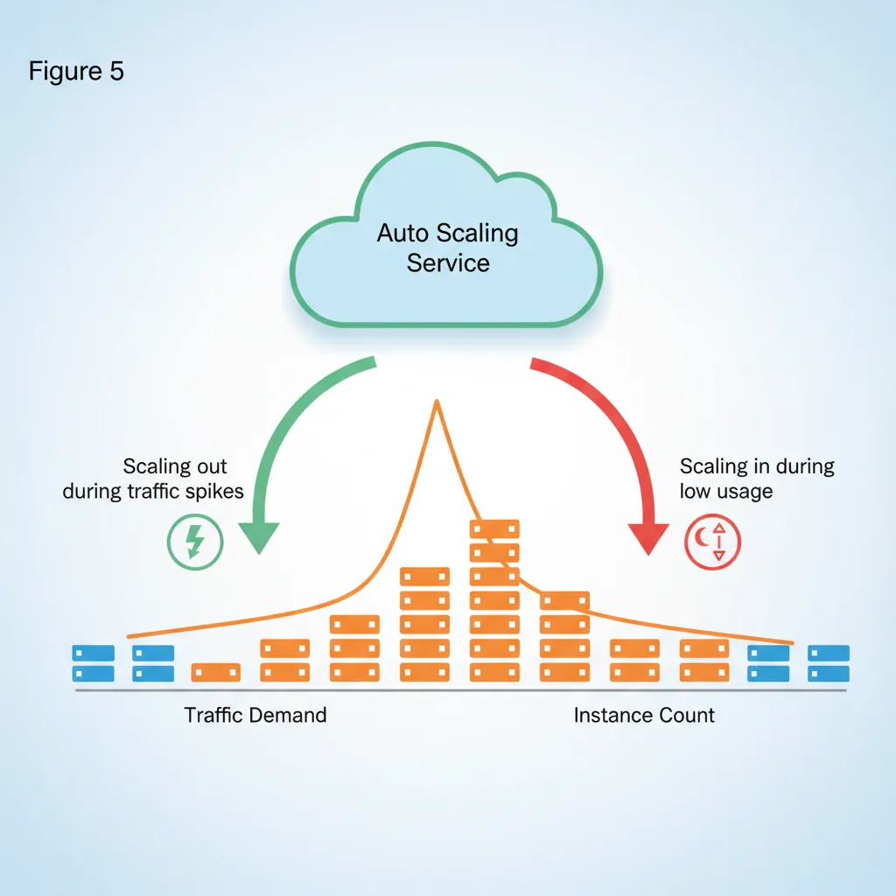

Introduction
Cloud compute services form the foundation of modern cloud infrastructure, providing on-demand virtual machines that can be provisioned in minutes and scaled to meet any workload. Understanding how to effectively use these services across providers is essential for any cloud practitioner.

- AWS EC2 - Elastic Compute Cloud instances
- Azure VMs - Azure Virtual Machines
- GCP Compute Engine - Google's VM instances
- Instance types, families, and sizing
- Auto-scaling and load balancing
- Pricing models and cost optimization
Cloud Computing Mastery
Cloud Computing Fundamentals
IaaS, PaaS, SaaS, deployment modelsCLI Tools & Setup
AWS CLI, Azure CLI, gcloud, TerraformCompute Services
VMs, containers, auto-scaling, spot instancesStorage Services
Object, block, file storage, data lifecycleDatabase Services
RDS, DynamoDB, Cosmos DB, cachingNetworking & CDN
VPCs, load balancers, DNS, content deliveryServerless Computing
Lambda, Functions, event-driven architectureContainers & Kubernetes
Docker, EKS, AKS, GKE, orchestrationIdentity & Security
IAM, RBAC, encryption, complianceMonitoring & Observability
CloudWatch, Azure Monitor, loggingDevOps & CI/CD
Pipelines, infrastructure as code, GitOpsCore Concepts
Virtual Machine Components
Every cloud VM consists of several key components:

- vCPUs - Virtual CPU cores (typically hyperthreaded)
- Memory (RAM) - Allocated system memory
- Storage - Root disk and additional data disks
- Network - Virtual NICs, IP addresses, bandwidth
- Machine Image - OS and pre-installed software template
Instance Families
All providers organize instance types into families optimized for different workloads:
| Workload Type | AWS | Azure | GCP |
|---|---|---|---|
| General Purpose | M5, M6i, M7g, T3 | D-series, B-series | E2, N2, N2D |
| Compute Optimized | C5, C6i, C7g | F-series | C2, C2D, H3 |
| Memory Optimized | R5, R6i, X2 | E-series, M-series | M2, M3 |
| Storage Optimized | I3, I4i, D3 | L-series | Z3 |
| GPU/Accelerated | P4, G5, Inf2 | NC, ND, NV-series | A2, G2 |
Provider Comparison
| Feature | AWS EC2 | Azure VMs | GCP Compute |
|---|---|---|---|
| CLI Tool | aws ec2 | az vm | gcloud compute |
| Image Name | AMI | Image | Image |
| Spot/Preemptible | Spot Instances | Spot VMs | Spot VMs |
| Reserved | Reserved Instances, Savings Plans | Reserved VM Instances | Committed Use Discounts |
| Auto Scaling | Auto Scaling Groups | VM Scale Sets | Managed Instance Groups |
| Max vCPUs | 448 (u-24tb1.metal) | 416 (M-series) | 416 (m3-megamem-128) |
AWS EC2
AWS EC2 Key Features
- Largest selection of instance types (500+)
- Nitro System for enhanced security and performance
- Graviton processors (ARM-based, cost-effective)
- Placement groups for low-latency networking
- Instance Store (ephemeral) and EBS (persistent) storage

Launching EC2 Instances
# List available AMIs (Amazon Linux 2023)
aws ec2 describe-images \
--owners amazon \
--filters "Name=name,Values=al2023-ami-*-x86_64" \
--query 'Images | sort_by(@, &CreationDate) | [-1].ImageId' \
--output text
# Launch a basic instance
aws ec2 run-instances \
--image-id ami-0abcdef1234567890 \
--instance-type t3.micro \
--key-name my-key-pair \
--security-group-ids sg-0123456789abcdef0 \
--subnet-id subnet-0123456789abcdef0 \
--tag-specifications 'ResourceType=instance,Tags=[{Key=Name,Value=my-instance}]'
# Launch with user data script
aws ec2 run-instances \
--image-id ami-0abcdef1234567890 \
--instance-type t3.small \
--key-name my-key-pair \
--user-data file://startup-script.sh \
--tag-specifications 'ResourceType=instance,Tags=[{Key=Name,Value=web-server}]'
# Launch with IAM role
aws ec2 run-instances \
--image-id ami-0abcdef1234567890 \
--instance-type t3.medium \
--iam-instance-profile Name=my-instance-profile \
--tag-specifications 'ResourceType=instance,Tags=[{Key=Name,Value=app-server}]'
Managing EC2 Instances
# List all instances
aws ec2 describe-instances \
--query 'Reservations[*].Instances[*].[InstanceId,State.Name,InstanceType,PublicIpAddress,Tags[?Key==`Name`].Value|[0]]' \
--output table
# Get instance details
aws ec2 describe-instances --instance-ids i-0123456789abcdef0
# Start instance
aws ec2 start-instances --instance-ids i-0123456789abcdef0
# Stop instance
aws ec2 stop-instances --instance-ids i-0123456789abcdef0
# Reboot instance
aws ec2 reboot-instances --instance-ids i-0123456789abcdef0
# Terminate instance
aws ec2 terminate-instances --instance-ids i-0123456789abcdef0
# Modify instance type (must be stopped first)
aws ec2 stop-instances --instance-ids i-0123456789abcdef0
aws ec2 wait instance-stopped --instance-ids i-0123456789abcdef0
aws ec2 modify-instance-attribute \
--instance-id i-0123456789abcdef0 \
--instance-type "{\"Value\": \"t3.large\"}"
aws ec2 start-instances --instance-ids i-0123456789abcdef0
EC2 Key Pairs and Security Groups
# Create key pair
aws ec2 create-key-pair \
--key-name my-key-pair \
--query 'KeyMaterial' \
--output text > my-key-pair.pem
chmod 400 my-key-pair.pem
# List key pairs
aws ec2 describe-key-pairs --output table
# Create security group
aws ec2 create-security-group \
--group-name my-sg \
--description "My security group" \
--vpc-id vpc-0123456789abcdef0
# Add inbound rules
aws ec2 authorize-security-group-ingress \
--group-id sg-0123456789abcdef0 \
--protocol tcp \
--port 22 \
--cidr 0.0.0.0/0
aws ec2 authorize-security-group-ingress \
--group-id sg-0123456789abcdef0 \
--protocol tcp \
--port 80 \
--cidr 0.0.0.0/0
aws ec2 authorize-security-group-ingress \
--group-id sg-0123456789abcdef0 \
--protocol tcp \
--port 443 \
--cidr 0.0.0.0/0
# List security group rules
aws ec2 describe-security-groups --group-ids sg-0123456789abcdef0
EC2 Storage (EBS)
# Create EBS volume
aws ec2 create-volume \
--availability-zone us-east-1a \
--size 100 \
--volume-type gp3 \
--iops 3000 \
--throughput 125 \
--tag-specifications 'ResourceType=volume,Tags=[{Key=Name,Value=data-volume}]'
# Attach volume to instance
aws ec2 attach-volume \
--volume-id vol-0123456789abcdef0 \
--instance-id i-0123456789abcdef0 \
--device /dev/sdf
# Detach volume
aws ec2 detach-volume --volume-id vol-0123456789abcdef0
# Create snapshot
aws ec2 create-snapshot \
--volume-id vol-0123456789abcdef0 \
--description "Daily backup" \
--tag-specifications 'ResourceType=snapshot,Tags=[{Key=Name,Value=daily-backup}]'
# List volumes
aws ec2 describe-volumes \
--query 'Volumes[*].[VolumeId,State,Size,VolumeType,Attachments[0].InstanceId]' \
--output table
Azure Virtual Machines
Azure VMs Key Features
- Hybrid cloud integration with Azure Arc
- Confidential computing with secure enclaves
- Azure Dedicated Host for compliance
- Proximity placement groups
- Ultra Disk storage for highest IOPS

Azure VM Naming Convention & the D-Series Family
Azure VM sizes follow a structured naming pattern that can look confusing at first (e.g., Standard_D4s_v5), but once you understand the formula, you can instantly decode any Azure VM size:
Azure VM Naming Convention
==========================
Standard_D4s_v5
│ │││ ││
│ │││ └┴─ Version (v3, v4, v5 = newer hardware generations)
│ │││
│ ││└─── Capability: s = Premium SSD support
│ ││ a = AMD processor
│ ││ d = local temp disk
│ ││ l = low memory
│ ││ p = ARM-based (Ampere)
│ ││
│ │└──── vCPU count (2, 4, 8, 16, 32, 48, 64, 96)
│ │
│ └───── Family letter:
│ D = General Purpose (balanced CPU/memory)
│ B = Burstable (variable workloads)
│ F = Compute Optimized (high CPU)
│ E = Memory Optimized (high memory)
│ L = Storage Optimized (high disk throughput)
│ N = GPU Accelerated (ML/rendering)
│ M = Memory Intensive (SAP, large DBs)
│
└───────── Pricing tier (always "Standard" for regular VMs)Standard_D8s_v5→ General purpose, 8 vCPUs, Premium SSD capable, version 5 (Intel)Standard_D4as_v5→ General purpose, 4 vCPUs, AMD processor, Premium SSD, version 5Standard_D16ds_v5→ General purpose, 16 vCPUs, local temp disk, Premium SSD, version 5Standard_D2ps_v5→ General purpose, 2 vCPUs, ARM (Ampere), Premium SSD, version 5Standard_B2s→ Burstable, 2 vCPUs, Premium SSD (ideal for dev/test)
The D-Series: Azure's Most Popular VM Family
The D-series is Azure's general-purpose workhorse — the most widely used VM family for production workloads. It offers a balanced ratio of CPU to memory (typically 1 vCPU : 4 GB RAM) and is suitable for the majority of workloads including web servers, application servers, small-to-medium databases, and development environments.
| D-Series Variant | Processor | vCPU : Memory | Best For | Example Sizes |
|---|---|---|---|---|
| Dv5 / Dsv5 | Intel Ice Lake (3rd Gen Xeon) | 1 : 4 GB | General production workloads, enterprise apps | D2s_v5 (2 vCPU, 8 GB) to D96s_v5 (96 vCPU, 384 GB) |
| Dasv5 | AMD EPYC (3rd Gen Milan) | 1 : 4 GB | Cost-effective alternative to Intel D-series (~10% cheaper) | D2as_v5, D4as_v5, D8as_v5…D96as_v5 |
| Ddsv5 | Intel Ice Lake | 1 : 4 GB | Workloads needing fast local temp disk (caching, temp files) | D2ds_v5 — includes local NVMe SSD storage |
| Dpsv5 | Ampere Altra (ARM64) | 1 : 4 GB | ARM-native Linux workloads, web servers, microservices | D2ps_v5, D4ps_v5…D64ps_v5 |
| Dlsv5 | Intel Ice Lake | 1 : 2 GB (low memory) | CPU-heavy workloads that don't need much RAM | D2ls_v5 (2 vCPU, 4 GB) to D96ls_v5 |
| Dv4 / Dsv4 (previous gen) | Intel Cascade Lake (2nd Gen Xeon) | 1 : 4 GB | Still supported; v5 recommended for new deployments | D2s_v4 through D64s_v4 |
How to Choose the Right D-Series Variant
Follow this decision path to pick the right D-series VM for your workload:
- Do you need the lowest cost? → Choose Dasv5 (AMD). AMD variants are typically 5–15% cheaper than Intel equivalents with comparable performance.
- Is your workload ARM-compatible (Linux with no x86 dependencies)? → Choose Dpsv5 (Ampere ARM). Up to 20% better price-performance for web servers and containerized apps.
- Do you need fast local temp storage? → Choose Ddsv5 (includes local NVMe SSD). Great for caching layers, ETL pipelines, or apps that write to temp files.
- Is your app CPU-bound with low memory needs? → Choose Dlsv5 (low memory). Half the RAM at a lower price — ideal for compute-heavy batch jobs.
- Standard production workload? → Choose Dsv5 (Intel). The safe, well-rounded default for most apps.
Pro Tip: Always append s to your size name (e.g., D4s_v5 not D4_v5). The “s” enables Premium SSD support, which you almost always want for production.
Creating Azure VMs
# Create resource group
az group create --name myResourceGroup --location eastus
# List available VM sizes
az vm list-sizes --location eastus --output table
# List available images
az vm image list --output table
az vm image list --publisher Canonical --offer 0001-com-ubuntu-server-jammy --all --output table
# Create VM with defaults
az vm create \
--resource-group myResourceGroup \
--name myVM \
--image Ubuntu2204 \
--admin-username azureuser \
--generate-ssh-keys
# Create VM with specific configuration
az vm create \
--resource-group myResourceGroup \
--name myVM \
--image Ubuntu2204 \
--size Standard_D2s_v3 \
--admin-username azureuser \
--ssh-key-values ~/.ssh/id_rsa.pub \
--public-ip-sku Standard \
--vnet-name myVNet \
--subnet mySubnet \
--nsg myNSG \
--tags Environment=Dev Project=Demo
# Create VM with custom data (cloud-init)
az vm create \
--resource-group myResourceGroup \
--name webServer \
--image Ubuntu2204 \
--size Standard_B2s \
--admin-username azureuser \
--generate-ssh-keys \
--custom-data cloud-init.yaml
Managing Azure VMs
# List all VMs
az vm list --output table
# List VMs with details
az vm list \
--resource-group myResourceGroup \
--show-details \
--output table
# Get VM details
az vm show \
--resource-group myResourceGroup \
--name myVM
# Start VM
az vm start --resource-group myResourceGroup --name myVM
# Stop VM (deallocate - stops billing)
az vm deallocate --resource-group myResourceGroup --name myVM
# Stop VM (keep resources allocated)
az vm stop --resource-group myResourceGroup --name myVM
# Restart VM
az vm restart --resource-group myResourceGroup --name myVM
# Delete VM
az vm delete --resource-group myResourceGroup --name myVM --yes
# Resize VM
az vm resize \
--resource-group myResourceGroup \
--name myVM \
--size Standard_D4s_v3
# List available sizes for resize
az vm list-vm-resize-options \
--resource-group myResourceGroup \
--name myVM \
--output table
Azure VM Networking
# Create network security group
az network nsg create \
--resource-group myResourceGroup \
--name myNSG
# Add NSG rule for SSH
az network nsg rule create \
--resource-group myResourceGroup \
--nsg-name myNSG \
--name AllowSSH \
--protocol tcp \
--priority 1000 \
--destination-port-range 22 \
--access allow
# Add NSG rule for HTTP/HTTPS
az network nsg rule create \
--resource-group myResourceGroup \
--nsg-name myNSG \
--name AllowHTTP \
--protocol tcp \
--priority 1001 \
--destination-port-range 80 443 \
--access allow
# Get public IP
az vm list-ip-addresses \
--resource-group myResourceGroup \
--name myVM \
--output table
# Open port on existing VM
az vm open-port \
--resource-group myResourceGroup \
--name myVM \
--port 80 \
--priority 1002
Azure VM Disks
# Create managed disk
az disk create \
--resource-group myResourceGroup \
--name myDataDisk \
--size-gb 128 \
--sku Premium_LRS
# Attach disk to VM
az vm disk attach \
--resource-group myResourceGroup \
--vm-name myVM \
--name myDataDisk
# Detach disk
az vm disk detach \
--resource-group myResourceGroup \
--vm-name myVM \
--name myDataDisk
# List disks
az disk list \
--resource-group myResourceGroup \
--output table
# Create snapshot
az snapshot create \
--resource-group myResourceGroup \
--name mySnapshot \
--source myDataDisk
# Resize OS disk
az vm deallocate --resource-group myResourceGroup --name myVM
az disk update \
--resource-group myResourceGroup \
--name myVM_OsDisk \
--size-gb 256
az vm start --resource-group myResourceGroup --name myVM
GCP Compute Engine
GCP Compute Engine Key Features
- Custom machine types (configure exact vCPU/memory)
- Live migration during maintenance
- Sole-tenant nodes for compliance
- Local SSD for high-performance storage
- Per-second billing (minimum 1 minute)
GCP Machine Families & Types
Unlike Azure and AWS where you choose from a fixed catalogue of named sizes, Google Compute Engine uniquely lets you create custom machine types with any vCPU/memory combination. But GCP also provides predefined machine families optimized for specific workloads:
| Family | Series | Processor | vCPU : Memory | Best For |
|---|---|---|---|---|
| General Purpose | E2 | Intel / AMD (shared-core available) | 1 : 4 GB (flexible) | Cost-effective — dev/test, small web apps, microservices. GCP's equivalent of Azure B-series. |
| N2 | Intel Cascade Lake / Ice Lake | 1 : 4 GB | Balanced production workloads. GCP's equivalent of Azure D-series (Dsv5). | |
| N2D | AMD EPYC Milan | 1 : 4 GB | Cost-effective AMD alternative. Equivalent to Azure Dasv5. | |
| Compute Optimized | C2 | Intel Cascade Lake (3.1 GHz sustained) | 1 : 4 GB | Gaming, HPC, single-threaded apps, ad serving |
| C2D | AMD EPYC Milan (3rd Gen) | 1 : 4 GB | High-core count compute, data analytics, scientific computing | |
| Memory Optimized | M2 | Intel Cascade Lake | 1 : 14–28 GB | SAP HANA, large in-memory databases, real-time analytics |
| M3 | Intel Ice Lake | 1 : 16 GB | Next-gen memory-intensive workloads, up to 30 TB RAM | |
| Accelerator | A2 / G2 | Intel + NVIDIA A100 / L4 GPUs | Varies | ML training, inference, video transcoding, rendering |
--custom-cpu=6 --custom-memory=20GB creates a VM with 6 vCPUs and 20 GB RAM. You pay only for what you allocate. This flexibility doesn't exist on AWS or Azure (where you must pick from a fixed catalogue). Custom types work within any general-purpose family (N2, N2D, E2).
Cross-Provider Equivalents — Quick Reference
When migrating or comparing costs, use this mapping to find equivalent VM sizes across providers:
| Workload | AWS EC2 | Azure VM | GCP Compute Engine | Approx. Specs |
|---|---|---|---|---|
| Dev/test, burstable | t3.medium | Standard_B2s | e2-medium | 2 vCPU, 4 GB |
| General production | m5.xlarge | Standard_D4s_v5 | n2-standard-4 | 4 vCPU, 16 GB |
| General AMD | m5a.xlarge | Standard_D4as_v5 | n2d-standard-4 | 4 vCPU, 16 GB |
| Compute optimized | c5.2xlarge | Standard_F8s_v2 | c2-standard-8 | 8 vCPU, 16–32 GB |
| Memory optimized | r5.2xlarge | Standard_E8s_v5 | n2-highmem-8 | 8 vCPU, 64 GB |
| GPU (ML training) | p4d.24xlarge | Standard_NC24ads_A100_v4 | a2-highgpu-1g | NVIDIA A100 |
Key insight: Azure D-series maps directly to AWS M5/M6i (Intel) or M5a/M6a (AMD), and to GCP N2 (Intel) or N2D (AMD). They all offer the same 1:4 vCPU-to-memory ratio for balanced production workloads.
Creating GCP Instances
# List available machine types
gcloud compute machine-types list --filter="zone:us-central1-a" | head -20
# List available images
gcloud compute images list --filter="family:ubuntu"
# Create basic instance
gcloud compute instances create my-instance \
--zone=us-central1-a \
--machine-type=e2-medium \
--image-family=ubuntu-2204-lts \
--image-project=ubuntu-os-cloud
# Create instance with custom configuration
gcloud compute instances create web-server \
--zone=us-central1-a \
--machine-type=n2-standard-2 \
--image-family=ubuntu-2204-lts \
--image-project=ubuntu-os-cloud \
--boot-disk-size=50GB \
--boot-disk-type=pd-ssd \
--tags=http-server,https-server \
--metadata-from-file=startup-script=startup.sh
# Create custom machine type
gcloud compute instances create custom-vm \
--zone=us-central1-a \
--custom-cpu=4 \
--custom-memory=8GB \
--image-family=debian-12 \
--image-project=debian-cloud
# Create with service account
gcloud compute instances create app-server \
--zone=us-central1-a \
--machine-type=e2-standard-2 \
--service-account=my-sa@project.iam.gserviceaccount.com \
--scopes=cloud-platform \
--image-family=ubuntu-2204-lts \
--image-project=ubuntu-os-cloud
Managing GCP Instances
# List instances
gcloud compute instances list
# List instances in specific zone
gcloud compute instances list --filter="zone:us-central1-a"
# Describe instance
gcloud compute instances describe my-instance --zone=us-central1-a
# Start instance
gcloud compute instances start my-instance --zone=us-central1-a
# Stop instance
gcloud compute instances stop my-instance --zone=us-central1-a
# Reset instance (hard restart)
gcloud compute instances reset my-instance --zone=us-central1-a
# Delete instance
gcloud compute instances delete my-instance --zone=us-central1-a
# Change machine type (requires stop)
gcloud compute instances stop my-instance --zone=us-central1-a
gcloud compute instances set-machine-type my-instance \
--zone=us-central1-a \
--machine-type=e2-standard-4
gcloud compute instances start my-instance --zone=us-central1-a
# SSH into instance
gcloud compute ssh my-instance --zone=us-central1-a
# SSH with specific user
gcloud compute ssh myuser@my-instance --zone=us-central1-a
GCP Firewall Rules
# Create firewall rule for SSH
gcloud compute firewall-rules create allow-ssh \
--direction=INGRESS \
--priority=1000 \
--network=default \
--action=ALLOW \
--rules=tcp:22 \
--source-ranges=0.0.0.0/0
# Create firewall rule for HTTP/HTTPS
gcloud compute firewall-rules create allow-http \
--direction=INGRESS \
--priority=1000 \
--network=default \
--action=ALLOW \
--rules=tcp:80,tcp:443 \
--target-tags=http-server,https-server \
--source-ranges=0.0.0.0/0
# List firewall rules
gcloud compute firewall-rules list
# Delete firewall rule
gcloud compute firewall-rules delete allow-ssh
# Update firewall rule
gcloud compute firewall-rules update allow-http \
--source-ranges=10.0.0.0/8,192.168.0.0/16
GCP Persistent Disks
# Create persistent disk
gcloud compute disks create my-data-disk \
--zone=us-central1-a \
--size=100GB \
--type=pd-ssd
# Attach disk to instance
gcloud compute instances attach-disk my-instance \
--zone=us-central1-a \
--disk=my-data-disk
# Detach disk
gcloud compute instances detach-disk my-instance \
--zone=us-central1-a \
--disk=my-data-disk
# List disks
gcloud compute disks list
# Create snapshot
gcloud compute disks snapshot my-data-disk \
--zone=us-central1-a \
--snapshot-names=my-snapshot
# List snapshots
gcloud compute snapshots list
# Resize disk (online resize supported)
gcloud compute disks resize my-data-disk \
--zone=us-central1-a \
--size=200GB
Auto Scaling
Auto scaling automatically adjusts the number of instances based on demand, ensuring performance during traffic spikes while minimizing costs during low usage.

AWS Auto Scaling
# Create launch template
aws ec2 create-launch-template \
--launch-template-name my-template \
--version-description "v1" \
--launch-template-data '{
"ImageId": "ami-0abcdef1234567890",
"InstanceType": "t3.micro",
"KeyName": "my-key-pair",
"SecurityGroupIds": ["sg-0123456789abcdef0"],
"UserData": "IyEvYmluL2Jhc2gKZWNobyAiSGVsbG8gV29ybGQi"
}'
# Create Auto Scaling group
aws autoscaling create-auto-scaling-group \
--auto-scaling-group-name my-asg \
--launch-template LaunchTemplateName=my-template,Version='$Latest' \
--min-size 1 \
--max-size 5 \
--desired-capacity 2 \
--vpc-zone-identifier "subnet-0123456789abcdef0,subnet-0fedcba9876543210" \
--target-group-arns "arn:aws:elasticloadbalancing:us-east-1:123456789012:targetgroup/my-tg/1234567890123456" \
--health-check-type ELB \
--health-check-grace-period 300
# Create scaling policy (target tracking)
aws autoscaling put-scaling-policy \
--auto-scaling-group-name my-asg \
--policy-name cpu-target-tracking \
--policy-type TargetTrackingScaling \
--target-tracking-configuration '{
"PredefinedMetricSpecification": {
"PredefinedMetricType": "ASGAverageCPUUtilization"
},
"TargetValue": 70.0
}'
# Describe Auto Scaling group
aws autoscaling describe-auto-scaling-groups \
--auto-scaling-group-names my-asg
# Update desired capacity
aws autoscaling set-desired-capacity \
--auto-scaling-group-name my-asg \
--desired-capacity 3
Azure VM Scale Sets
# Create VM Scale Set
az vmss create \
--resource-group myResourceGroup \
--name myScaleSet \
--image Ubuntu2204 \
--upgrade-policy-mode automatic \
--admin-username azureuser \
--generate-ssh-keys \
--instance-count 2 \
--vm-sku Standard_B2s \
--lb-sku Standard
# Enable autoscale
az monitor autoscale create \
--resource-group myResourceGroup \
--resource myScaleSet \
--resource-type Microsoft.Compute/virtualMachineScaleSets \
--name autoscale-config \
--min-count 1 \
--max-count 10 \
--count 2
# Add autoscale rule (scale out on CPU > 70%)
az monitor autoscale rule create \
--resource-group myResourceGroup \
--autoscale-name autoscale-config \
--condition "Percentage CPU > 70 avg 5m" \
--scale out 1
# Add autoscale rule (scale in on CPU < 30%)
az monitor autoscale rule create \
--resource-group myResourceGroup \
--autoscale-name autoscale-config \
--condition "Percentage CPU < 30 avg 5m" \
--scale in 1
# List scale set instances
az vmss list-instances \
--resource-group myResourceGroup \
--name myScaleSet \
--output table
# Scale manually
az vmss scale \
--resource-group myResourceGroup \
--name myScaleSet \
--new-capacity 5
GCP Managed Instance Groups
# Create instance template
gcloud compute instance-templates create my-template \
--machine-type=e2-medium \
--image-family=ubuntu-2204-lts \
--image-project=ubuntu-os-cloud \
--boot-disk-size=20GB \
--tags=http-server \
--metadata-from-file=startup-script=startup.sh
# Create managed instance group
gcloud compute instance-groups managed create my-mig \
--zone=us-central1-a \
--template=my-template \
--size=2
# Enable autoscaling
gcloud compute instance-groups managed set-autoscaling my-mig \
--zone=us-central1-a \
--min-num-replicas=1 \
--max-num-replicas=10 \
--target-cpu-utilization=0.7 \
--cool-down-period=60
# List instances in group
gcloud compute instance-groups managed list-instances my-mig \
--zone=us-central1-a
# Resize group manually
gcloud compute instance-groups managed resize my-mig \
--zone=us-central1-a \
--size=5
# Update template (rolling update)
gcloud compute instance-groups managed rolling-action start-update my-mig \
--zone=us-central1-a \
--version=template=my-template-v2 \
--max-surge=1 \
--max-unavailable=0
Pricing Models
| Model | AWS | Azure | GCP | Savings |
|---|---|---|---|---|
| On-Demand | On-Demand | Pay-as-you-go | On-Demand | 0% (baseline) |
| Spot/Preemptible | Spot Instances | Spot VMs | Spot VMs | 60-90% |
| Reserved (1 year) | Reserved Instances | Reserved VMs | Committed Use | 30-40% |
| Reserved (3 year) | Reserved Instances | Reserved VMs | Committed Use | 50-60% |
| Sustained Use | N/A | N/A | Automatic | Up to 30% |
Using Spot/Preemptible Instances
# AWS Spot Instance
aws ec2 run-instances \
--image-id ami-0abcdef1234567890 \
--instance-type t3.large \
--instance-market-options 'MarketType=spot,SpotOptions={MaxPrice=0.05,SpotInstanceType=persistent}'
# Azure Spot VM
az vm create \
--resource-group myResourceGroup \
--name mySpotVM \
--image Ubuntu2204 \
--size Standard_D2s_v3 \
--priority Spot \
--eviction-policy Deallocate \
--max-price 0.05
# GCP Spot VM
gcloud compute instances create spot-instance \
--zone=us-central1-a \
--machine-type=n2-standard-2 \
--provisioning-model=SPOT \
--instance-termination-action=STOP \
--image-family=ubuntu-2204-lts \
--image-project=ubuntu-os-cloud
Best Practices
- Use IAM roles instead of access keys on instances
- Keep security groups/NSGs restrictive (principle of least privilege)
- Encrypt EBS/managed disks at rest
- Use private subnets for backend services
- Enable VPC flow logs / NSG flow logs
- Patch instances regularly (use Systems Manager, Update Management)
Cost Optimization
- Right-size instances - Monitor utilization and adjust
- Use auto scaling - Scale down during low demand
- Leverage spot instances - For fault-tolerant workloads
- Reserved instances - For predictable, steady-state workloads
- Schedule start/stop - Turn off dev/test instances after hours
- Use savings plans - Flexible commitments across instance families
Scheduled Start/Stop
# AWS: Use EventBridge + Lambda or Instance Scheduler
# Simple example with AWS CLI (for automation scripts)
aws ec2 stop-instances --instance-ids i-0123456789abcdef0
aws ec2 start-instances --instance-ids i-0123456789abcdef0
# Azure: Auto-shutdown configuration
az vm auto-shutdown \
--resource-group myResourceGroup \
--name myVM \
--time 1900
# GCP: Use instance schedules
gcloud compute resource-policies create instance-schedule my-schedule \
--region=us-central1 \
--vm-start-schedule="0 9 * * 1-5" \
--vm-stop-schedule="0 18 * * 1-5" \
--timezone="America/New_York"
gcloud compute instances add-resource-policies my-instance \
--zone=us-central1-a \
--resource-policies=my-schedule
Conclusion
Cloud compute services provide the flexibility to run any workload at any scale. While AWS EC2, Azure VMs, and GCP Compute Engine share core concepts, each offers unique features:
| Choose AWS EC2 If... | Choose Azure VMs If... | Choose GCP Compute If... |
|---|---|---|
| You need widest instance selection | You have Microsoft/Windows workloads | You want custom machine types |
| You want ARM-based Graviton | You need hybrid cloud with Azure Arc | You value automatic sustained use discounts |
| You need mature ecosystem | You require confidential computing | You want live migration during maintenance |